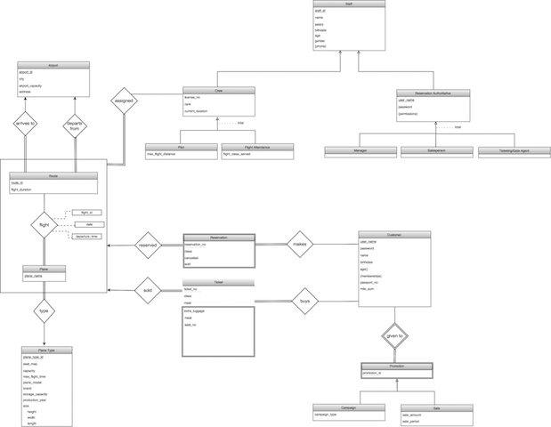

1.0 Introduction
This report explains the basic functionalities and extent of our Airline Company Data Management System project. The database-centered online system is going to be developed in line with the principles and requirements provided in this report. What we are aiming to achieve with this project, what are the basic functions, what roles will end users have, what are the limitations and restrictions, how the project is going to be designed and implemented, and how the database system will function is explained in detail to establish a common basis for the expectations from the project.
The report starts with Problem Definition part where the scope, aim, and properties of the Airline Company System is explained. Following chapter illustrates the importance of database system for our project, explains why a database is needed and how the database structure is going to be integrated to the project. Requirements chapter lists the extracted requirements in 3 subcategories: Functional Requirements, Nonfunctional Requirements and Pseudo Requirements. Functional Requirements are crucial to establish the scope and functioning logic of the project. The requirements are grouped under 4 different end users: customer, manager, salesperson and ticket/gate agents. According to their relation to the system, the expected functions of the system are listed. Hence, what the system is expected to do in various scenarios are explained. Moreover, by separating roles we established a clear understanding of the logic. In Nonfunctional Requirements part, we provided performance, reliability, security, usability goals for the system. In Pseudo Requirements, implementation technologies and helper tools are listed. In the Limitations section, the constraints on data, user roles and system functions are explained in detail to differentiate between what is in or out of our scope.
After defining project requirements, we provided the E/R diagram that will function as the basis of our database design. While constructing the E/R diagram we considered the requirements and functionalities of our system. We designed the diagram carefully so that all requirements can be satisfied with such a database system and the information and application structures can function simultaneously.
2.0 Project Description
Airline Company Data Management System is a webVbased application for maintaining reservations of an airlineVcompany. The system includes information about cities, airports, planes, flights, routes, reservations, sold/cancelled tickets, sales and promotions, schedules and information of pilots and flight attendance. Using this data, the system allows to view flight details, make/cancel reservations, buy/sell tickets. Customers are able to search for flights, make reservations, buy tickets, cancel their reservations with certain penalties, get promotions, specify extra luggage and meal information. The system also includes different flight classes such as business and economy, the prices for various classes are kept separately. Salespersons and ticketing/gate agents can also access to system to help the customer with reservation and purchasing operations. System manager is administrator therefore is able to update flight, route, pricing, employment and airport details.
The aim of our project is to establish an online reservation application for an airline company to easily and efficiently manage flight reservations. Therefore, the system will offer services to automate reservation and purchasing operations. By allowing the customer to search for a particular flight, view flight details such as route, connecting flights if they exist, flight time and price, make reservations and purchase tickets we intend customer to complete the entire reservation process from the system and always access to updated information through the system. The system is also useful for maintaining integrity and accuracy. Considering thousands of customers, crew and flights; the information needs to be controlled precisely to eliminate any problem or inconsistency.
Consequently, Airline Company Data Management System is intended to be an online reservation system that maintains validity of data continuously and offers purposeV specific operations to end users to ease and perfect reservations of an airline company.
2.1 Why Do We Need a Database for Airline Company Data Management System?
Our project aims to allow the airline company to manage a huge amount of data in a proper way. Since an airline company has many different types of subjects such as crew, planes, airports, cities, routes, reservations, seats, salespersons, prices, and promotions; it would be very difficult to manage the data without an automated database system. Thus, by the help of the database system, the company will be able to manage all of its main subjects and their relations in an organized, quick, automated and easy manner.
2.2 How Do We Use a Database as Part of this Project?
Database is going to manage all data related to airline company. We use the database management system to perform queries, data entries and updates in an automated way. Moreover, database system is used for future planning as well. According to intensity of flight reservations with respect to time, place and route; future flights are scheduled. The customer history and purchases is also tracked from the database system to decide on promotions and sales.
3.0 Requirements
3.1 Functional Requirements
Airline Company Data Management System separates system functionalities for 4 end users: customers, managers, salespersons and ticketing/gate agents.
3.1.1 Customer
- Customers should be able to view scheduled flights along with price, promotion, sales, connection details and duration information.
- Customers should be able to view prices of desired flights, get promotions and sales according to their flight history.
- Customers should be able to make reservations for available flights and cancel existing ones.
- Customers should be able to make payments of desired and available flights.
- Customers should be able to refund their purchased tickets with a penalty with respect to ticket type and remaining time to the flight.
- Customers should be able to choose seat, class, meal for their purchased tickets.
- Customers should be able to buy extra luggage for their purchased tickets.
- Customers should be able to cancel the extra luggage they bought before 24 hours from the flight.
- Customers should be able to view the current status of the flights that they have purchased a ticket for.
3.1.2 Manager
- Managers should be able to register new planes to system, and delete the existing ones.
- Managers should be able to send planes for repairing and assign the returning ones as available.
- Managers should be able to hire and fire stuff such as pilots, flight attendance, ground team etc.
- Managers should be able to add airports.
- Managers should be able to add routes between two existing airports and delete the existing ones.
- Managers should be able to delete airports if there is no route assigned to them.
- Managers should be able to create flights; change and cancel existing ones.
- Managers should be able to set prices of current flights.
- Managers should be able to apply promotions or sales to current flights or change/delete the current ones.
- Managers should be able to create crew from existing and unassigned staff.
- Managers should be able to assign crew to scheduled flights if available or remove the current assignments.
- Managers should be able to view current reservations and purchased tickets for flights.
- Managers should be able to view the current status of the flights.
3.1.3 Salesperson
- Salespersons should be able to view scheduled flights along with price, promotion, sales, connection details and duration information.
- Salespersons should be able to sell tickets and choose class, seat, and meal for purchased tickets.
- Salespersons should be able to cancel reservations.
- Salespersons should be able to take back the purchased tickets and refund them with a penalty with respect to ticket type and remaining time to the flight.
- Salespersons should be able to sell or cancel extra luggage.
- Salespersons should be able to view current reservations and purchased tickets for flights.
- Salespersons should be able to view the current status of the flights.
3.1.4 Ticketing/Gate Agent
- Ticketing / Gate Agents should be able to register the luggage.
- Ticketing / Gate Agents should be able to cancel reservations.
- Ticketing / Gate Agents should be able to assign seats for not checked in tickets.
- Ticketing / Gate Agents should be able to view current reservations and purchased tickets for flights.
- Ticketing / Gate Agents should be able to view the current status of the flights.
3.1.5 System Requirements
- The system should be able to block reservations after a flight is fully reserved.
- The system should be able to cancel reservations if the ticket is not purchased until 24 hours before the flight.
- The system should be able to give promotions to customers according to their flight history.
- The system should be able to record and track delays.
- All staff can also be customers.
3.2 Nonfunctional Requirements
3.2.1 Quick Response Time & Scalability
- The system should to be as fast and scalable as possible. Since the system contains big amount of data and many users will be trying to interact with the system simultaneously, the response time might grow bigger and bigger. To prevent a long waiting time and to have faster responses, we plan to use multiVthreading and vertical scaling for faster information retrieval and space.
3.2.2 Authentication
- Permissions of the actions of the users should be clearly specified and they must not be able to perform any extra action except the ones that they are given access to.
3.2.3 User-friendliness
- The system should be easily accessible and friendly, by meaning the user interface.
- Every user should be limited to see according to their permissions. For instance, customers or salespersons should not be able to see how managers can affect the system. By designing the system in this way, every user should be dealing with only the permissions they are permitted. They should not be confused by seeing what are irrelevant to them.
3.2.4 Accurate Data Distribution
- The system should not overwrite any data under any circumstances unless needed. When needed, the data, which is wanted to be changed, should be removed and new data should be entered to the system.
- No data should be lost during the actions. Flights, airports, tickets and sales should be dependent on each other so there should be a warning if any of these are missing in an action. In this way, possible data losses caused by the users will be prevented.
3.3 Pseudo Requirements
- MySQL will be used for database.
- Java will be used for backend.
- Website will be created with HTML, JavaScript, CSS, HTML 5, PHP, Angular JS and Bootstrap technologies.
4.0 Limitations
- The plane type will be determined according to the flight time.
- An airport can be added only after associated city is added.
- A route can be added only after associated airport is added.
- A route cannot be deleted if there is a current flight departing from or arriving at the airport.
- An airport cannot be deleted if there is an existing route associated with it.
- Customers cannot be able to sell tickets, register luggage, create airports or routes and hire personnel etc.
- Salesperson is a specific type of personnel in the system but it has its own boundaries as well. They will not have the same permissions which the managers have. They can have common permissions with gate agents.
- Ticketing/gate agent personnel can mainly register customers to their flights and are able to do the main work for paid tickets. For instance, they can register luggage, view the flight details for the purchased tickets and assign seats for customers. On a lighter note, they can have common permissions with salesperson.
- Managers are the people who are in charge of the management of the system. They have all the permission from hiring new staff to arranging all the flights, planes and even airports in the system.
5.0 Entity Relationship Diagram (Click to see the big version)
{kind=link}
6.0 Conclusion
The Airline Company Data Management System is a webVbased application for efficiently and accurately handling scheduling, reservation, and purchasing operations for an airline company. By providing distinguished services to different users, the system keeps track of all data of the company and allows integration of various functionalities.
In this report, we described the project and explained the importance of using database management system as a part of the project. Then we listed functional requirements in order to clarify which end user is expected to perform which operations. In the nonfunctional requirements we described properties of the system and domain while the implementation details are provided in pseudo requirements. The limitations of the system are also established. Finally, we provided Entity Relationship Diagram as the basis of our database design. We included link to our website we will use to publish our reports.